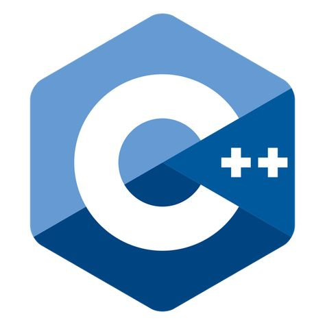

Embracing the Code: A Nurse's Journey into Software Development

As I sit down to write this, I can't help but reflect on the winding path that has led me here – from the hectic corridors of the ICU to the serene landscape of coding. Transitioning careers from nursing to software development might seem like a leap across a vast chasm, but in reality, the two worlds share surprising similarities and a wealth of transferrable skills...
Navigating the Digital Maze: Reflections on Technology in the Modern World

In today's fast-paced world, technology surrounds us at every turn. From smartphones that keep us connected to the internet of things that automate our homes, technology has become an integral part of our daily lives. But as we immerse ourselves deeper into the digital realm, it's crucial to pause and reflect on the impact that technology is having on our society, our relationships, and our sense of self...
Embracing the Polyglot Developer: Exploring the Beauty of Programming Languages
As software developers, we often find ourselves navigating through a myriad of programming languages, each with its unique syntax, paradigms, and quirks. It's akin to being multilingual in the realm of technology, where fluency in various languages opens doors to different perspectives, problem-solving approaches, and opportunities. In this blog post, let's delve into the world of programming languages and celebrate the richness they bring to our craft...
Empowering Women in STEM: Breaking Barriers, Shaping the Future

In the world of Science, Technology, Engineering, and Mathematics (STEM), women have long been underrepresented. However, the narrative is changing, and women are increasingly making their mark in these fields, driving innovation, and reshaping the future of technology. In this blog post, let's celebrate the invaluable contributions of women in STEM and explore the importance of empowering and supporting them in their endeavors...
The Office Microwave: A Journey Through Culinary Adventure and Misadventure

In the bustling corridors of corporate life, amidst the clacking of keyboards and the hum of fluorescent lights, there exists a culinary oasis—a humble appliance that stands as a beacon of hope for hungry office workers everywhere. Yes, I'm talking about none other than the illustrious office microwave. Join me on a tongue-in-cheek exploration of this unsung hero and its role in the epic saga of workplace cuisine...